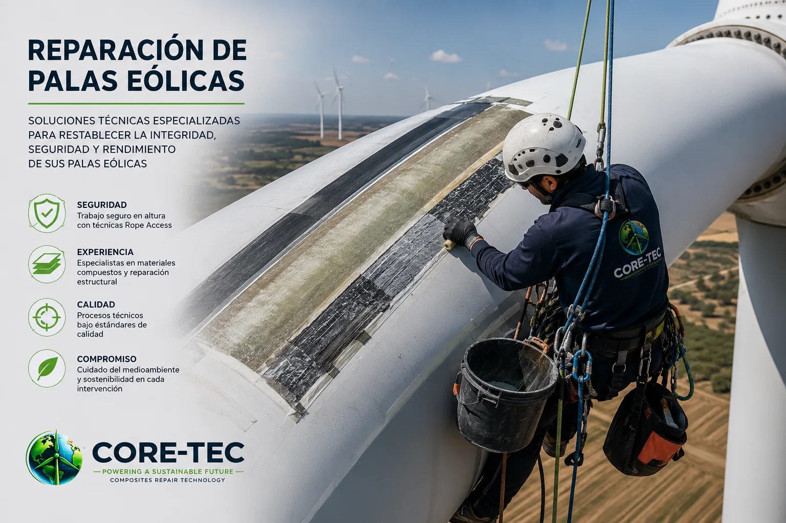
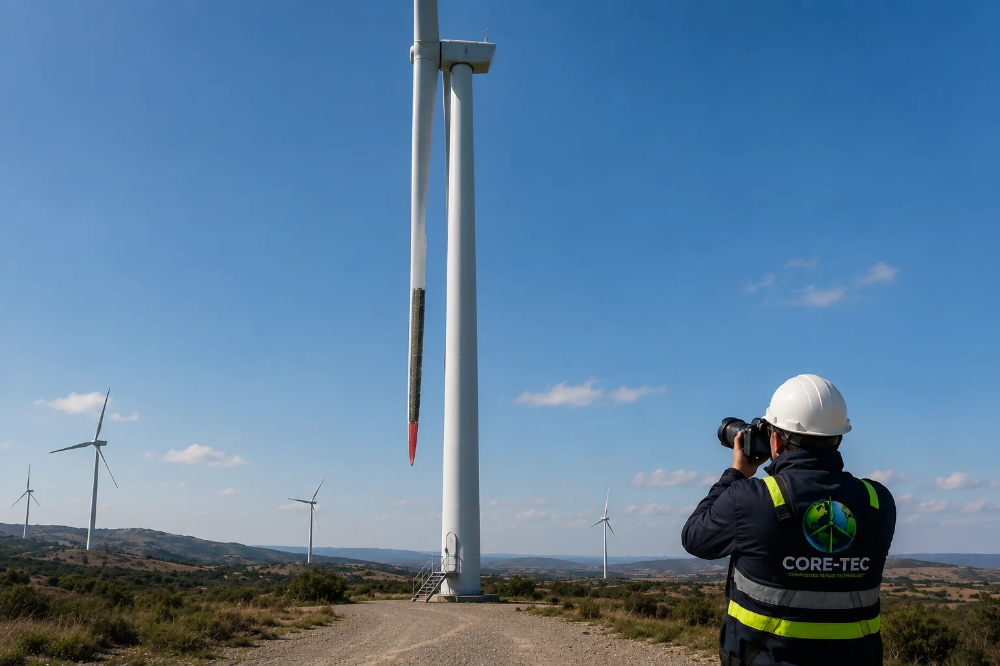
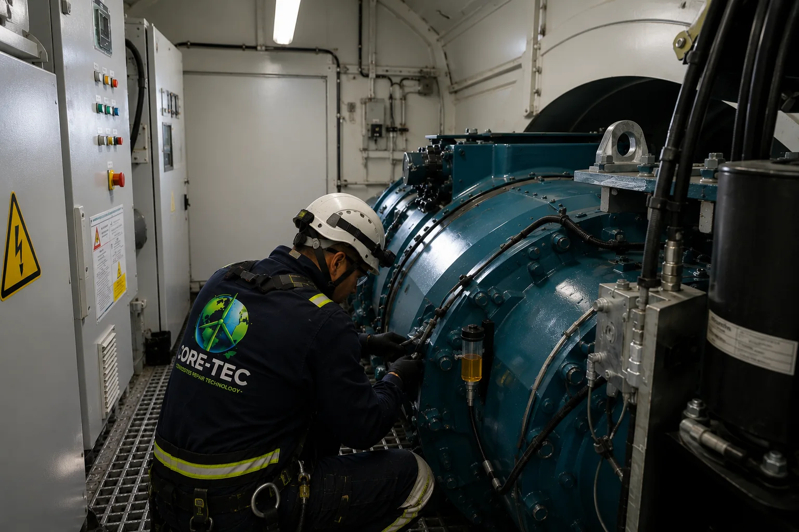
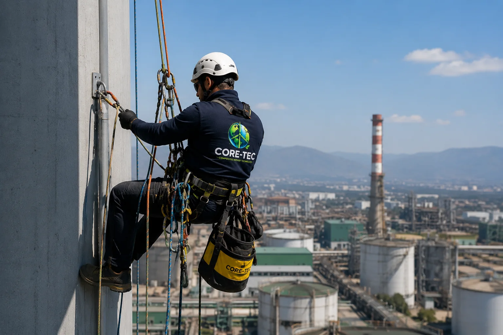
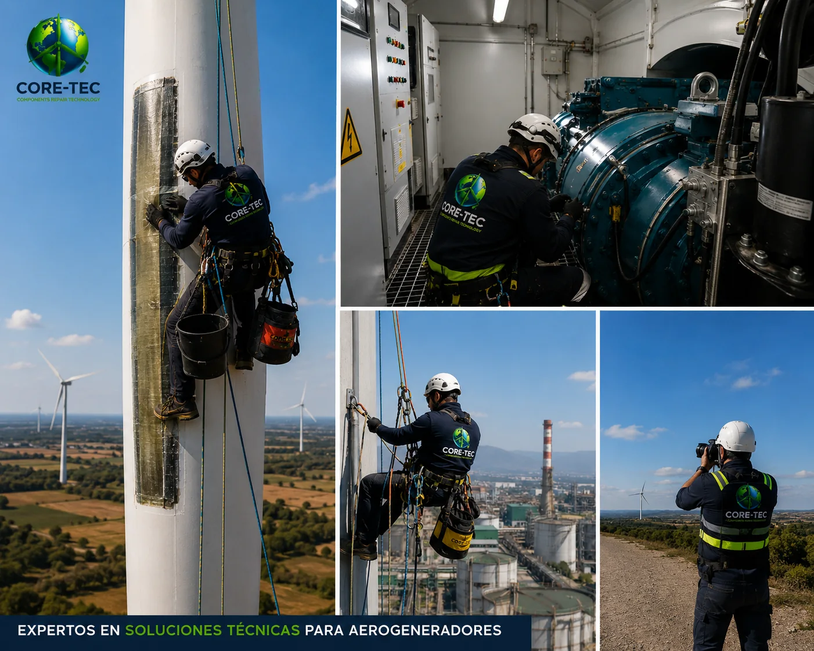

Reparación de palas eólicas
Restablecemos la integridad estructural, funcional y operacional de componentes fabricados en materiales compuestos. Las actividades pueden ejecutarse mediante Rope Access, plataformas u otras metodologías adaptadas al sitio.
- Erosión de borde de ataque
- Fisuras, grietas y daños en laminados
- Delaminaciones e impactos
- Desprendimientos de material compuesto
- Reparaciones cosméticas, funcionales y estructurales

Inspección de palas y aerogeneradores
Realizamos evaluaciones visuales, registros fotográficos técnicos e inspecciones con drones para identificar condiciones que puedan afectar el desempeño y la confiabilidad de los activos.
- Erosión y desgaste superficial
- Grietas, fisuras, delaminaciones y daños estructurales
- Desprendimientos de recubrimientos
- Impactos por rayos o agentes externos
- Condiciones anómalas en componentes visibles

Mantenimiento correctivo y preventivo eólico
Entregamos apoyo técnico y operacional a actividades programadas y no programadas, buscando minimizar los tiempos de indisponibilidad.
- Mantenimientos preventivos
- Correctivos menores y mayores
- Soporte en campañas eólicas
- Asistencia en paradas programadas
- Reemplazo de componentes y trabajos de difícil acceso
Inspección y certificación de polipastos
Verificamos la integridad, confiabilidad operativa y condiciones seguras de funcionamiento de polipastos instalados en aerogeneradores.
- Inspección visual y funcional
- Revisión de componentes mecánicos y eléctricos
- Verificación de cadenas, ganchos, frenos y sistemas de seguridad
- Pruebas operacionales y funcionales
- Prueba de carga con peso patrón certificado de hasta 1.000 kg
- Informe técnico y registro de condiciones observadas

Trabajos en altura y Rope Access
Aplicamos técnicas de acceso por cuerdas y otras soluciones de acceso seguro para intervenir estructuras complejas o con restricciones operacionales.
- Infraestructura industrial y estructuras metálicas
- Inspecciones técnicas
- Instalaciones de difícil acceso
- Montajes menores
- Trabajos de mantenimiento y reparación

Soporte técnico especializado
Brindamos apoyo operativo y técnico para proyectos eólicos e industriales, adaptándonos a iniciativas de distinta complejidad.
- Supervisión técnica
- Levantamientos en terreno
- Inspecciones y asesoría técnica
- Acompañamiento especializado
- Apoyo según requerimientos del mandante